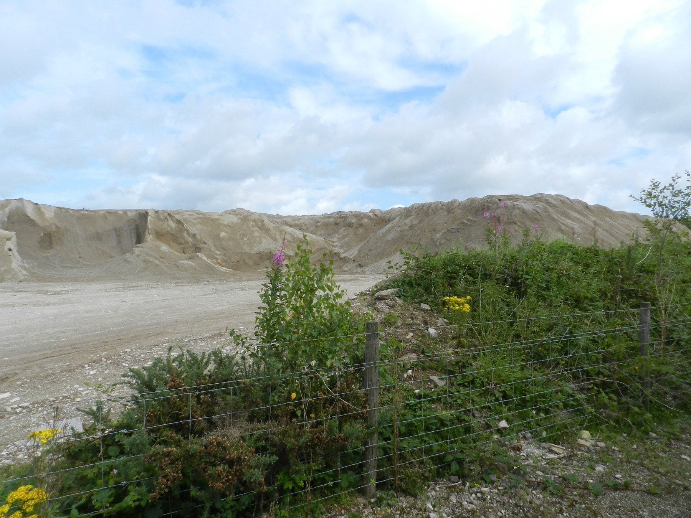
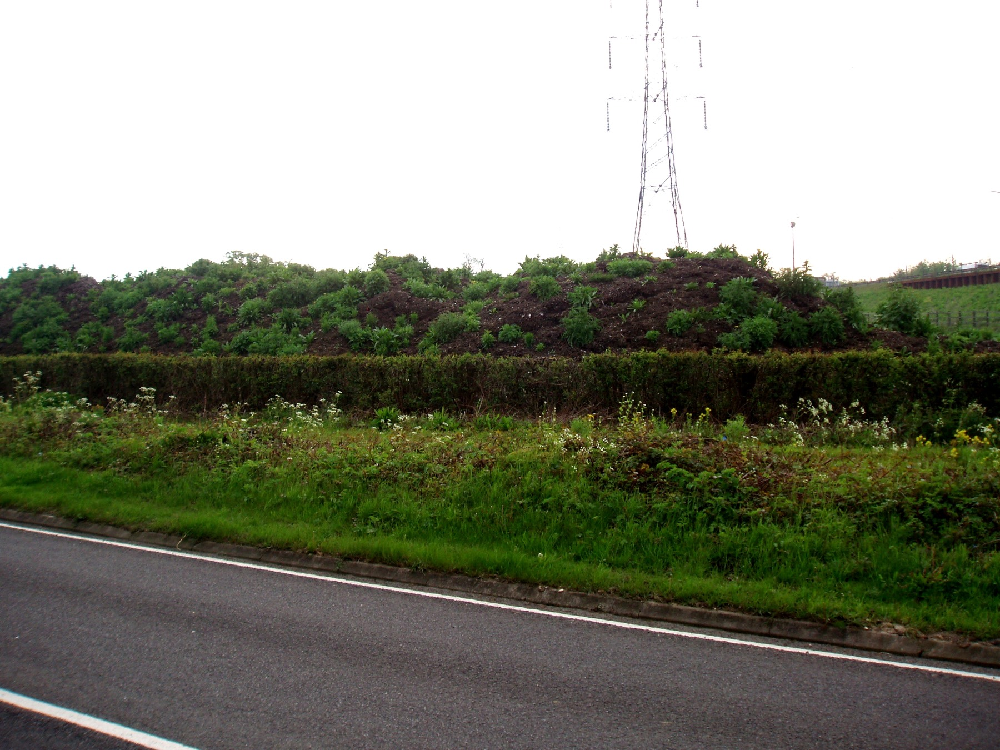
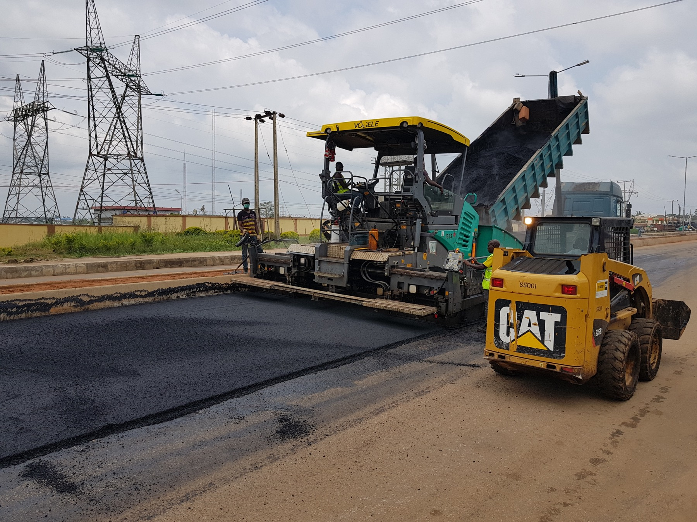

10+
Proyectos activos de acarreo y apoyo en campo actualmente en movimiento
Isla Prime Logistics mueve equipos y materiales con planificación seria, tiempos confiables y seguridad probada en el campo. Desde acarreo hasta apoyo en preparación de terreno, mantenemos tu proyecto corriendo sin tropiezos.
Movemos cargas pesadas por todo Puerto Rico con comunicación clara y ejecución confiable. Cada ruta, entrega y coordinación se planifica alrededor del calendario de tu equipo.
Cuando el proyecto necesita más que transporte, nuestro equipo puede apoyar preparación de terreno e infraestructura para mantener la operación alineada desde la planificación hasta la entrega.
Conoce Más de Isla PrimeProyectos activos de acarreo y apoyo en campo actualmente en movimiento
Compromiso con ejecución segura y entregas dentro del tiempo acordado
Años de experiencia combinada en transporte y construcción
Cobertura diseñada para trabajos municipales, privados e industriales
Nuestro modelo combina transporte pesado, apoyo de infraestructura y coordinación de proyecto para reducir atrasos, mejorar entregas y proteger el calendario de trabajo.
Ayudamos a coordinar entregas, movimientos de equipo y preparación de terreno con un solo aliado que entiende la realidad de la construcción en Puerto Rico.
Nos enfocamos en trabajos de infraestructura y transporte que apoyan comunidades más seguras, mejores servicios esenciales y resultados locales más fuertes.

Explora nuestros materiales más solicitados, compara opciones y entra al catálogo completo para ver detalles de precio y entrega en Puerto Rico.

Opciones confiables para sub-base, drenaje y preparación de caminos o solares.
Ver Detalles de Grava
Materiales seleccionados para siembra, nivelación y acondicionamiento saludable del terreno.
Ver Detalles de Top Soil
Abasto consistente para mezclas de hormigón, preparación de superficies y trabajos de pavimentación.
Ver Detalles de Arena
Fundador y CEO, Isla Prime Logistics
“Nuestra misión es entregar transporte confiable y trabajo de infraestructura que ayude a Puerto Rico a construir con confianza. Cada proyecto merece precisión, responsabilidad y valor real para la comunidad.”
Nuestro asistente virtual te ayuda a entender qué puede requerir tu proyecto antes de solicitar una cotización. Explica las opciones con claridad y te guía en decisiones de preparación de terreno sin complicarte.
Recibir Orientación del Asistente
Usa el cotizador de Isla Prime para escoger material, destino y cantidad, y recibir un estimado inmediato para tu próximo proyecto.